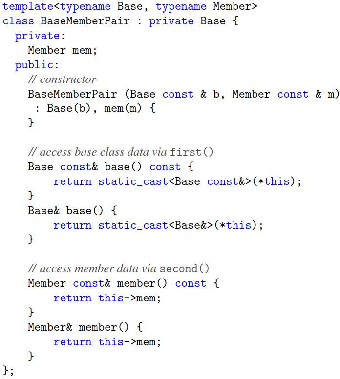
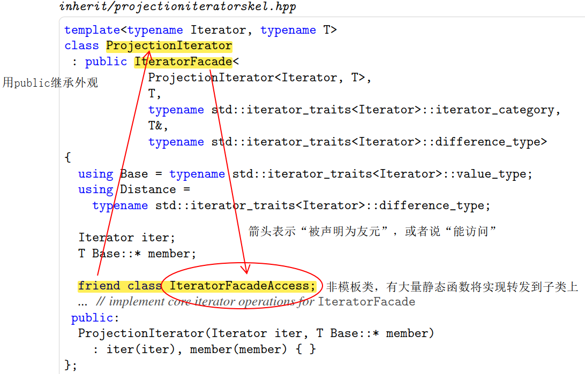

零开销继承：空基类优化（EBCO）
The Empty Base Class Optimization (EBCO)
C++ 没有真正零大小的类，因为在数组等场景需要用地址区分元素。一般编译器上空类的大小是 1 个字节。不过，当基类为空时，EBCO 会使得基类在子类中不占空间。但是 EBCO 的适用有条件。下面的场景是从实践中观察出来的，可能并没有被标准定义，但它演示了 EBCO 失效：
- 定义“空基类组”的概念：如果空类型 B 继承了空类型 A，那么 B 和 A 可以存在于同一个空基类组（看成并查集会比较好理解）。和其他空类型不相关的类型可以认为自为一组。
- 某类型 C 继承了一个大小为 N 的空基类组，那么它至少具有 N 个字节。如果这个类型 C 不是空类型，则还有对齐要求。
- 继承多个空基类组，对子类对象所占用空间的要求等效于继承于最大的那个空基类组。
1 | struct E1 {}; |
空成员优化
如果类中有一个空类的对象，那么它将无法适用 EBCO。将其改造为继承可以节约空间。
类模板由于事先不能确定参数类型，很难保证能够安全继承参数类型（比如参数类型可能是不可继承的、多个参数的实际类型相同因而引发了多次继承的编译错误等）。
下面的类模板把一个参数作为基类，一个参数作为成员，避免了多次继承同一类型的错误。而且这个类型也是可以被继承的。唯一的要求就是 Base 对应的类型可以继承。

第 25 章的元组实现会继续探讨相似的话题。
The Curiously Recurring Template Pattern (CRTP)
Barton-Nackman trick：和过去友元函数的定义查找有关系，现在查找方式改变了，用处变小了。
CRTP 的形式为 class T: CRTP<T> {...};，能够向子类注入一大堆东西。在子访父的场景下，被注入的东西可以成为搭建子类功能的基石，极大地简化了代码；在父访子的场景下，则可以实现外观模式。
类型相关函数
举例：使用 == 比较运算符生成 != 比较运算符（比较运算符一般被实现成 hidden friends）。
外观模式
则是由 CRTP 基类提供外观，并假设子类会实现某些操作，然后通过调用这些操作完成功能（父访子的场景）。实际上使用虚函数就能够很方便完成这个操作，但是这样可能会有比较大的性能代价。
举个例子：标准库迭代器要求一堆 type aliases 和方法，写起来繁琐，还容易因为看错了要求而使得迭代器功能不完全正常。可以构造标准库支持的迭代器的外观模板简化迭代器的实现。迭代器外观模板可能会要求子类提供 deref() 、advance(int) 等函数。
要点：怎么实现父访子？
1 | template <class T> struct CRTP { |
这段代码将 *this 转换成了子类的引用。由于这构成了类型依赖，这段代码的 print 函数将在第二阶段被检查。（使用 this->value 也会导致编译失败，因为这个类模板并没有继承任何有依赖的基类，虽然构成了限定名但不构成依赖。）
享元
通常子类的成员会被设计成私有，以防使用方透过外观访问实现细节。可以把外观模板类声明为子类的友元，但是这样外观模板类就有访问子类所有部分的权限。使用享元模式可以约定外观类模板对子类的访问权限。

这样外观模板虽然无法直接访问子类的任何成员，但是可以拿到子类的引用，并借助享元访问子类。由于不需要在外观模板中对子类的成员做假设，上面那个构建类型依赖的技巧（[](about:blank#%E8%A6%81%E7%82%B9%EF%BC%9A%E6%80%8E%E4%B9%88%E5%AE%9E%E7%8E%B0%E7%88%B6%E8%AE%BF%E5%AD%90%EF%BC%9F%5D(about:blank#%E8%A6%81%E7%82%B9%EF%BC%9A%E6%80%8E%E4%B9%88%E5%AE%9E%E7%8E%B0%E7%88%B6%E8%AE%BF%E5%AD%90%EF%BC%9F%5D(about:blank#)）也不再需要了。
std::enable_shared_from_this
这也是一个 CRTP 模板，里面包含一个 weak_ptr，长度为两个指针大小（对象指针和引用控制块指针）。子类通过继承这个模板可以使用 shared_from_this() 和 weak_from_this() 函数。前者本质上是从 weak_ptr 生成 shared_ptr，必须保证对象被包裹在 std::shared_ptr 对象中（共享环境）才能使用；在 C++17 之前若不在共享环境中访问 shared_from_this() 是 UB，现在则会抛出异常。
1 | class Best : public std::enable_shared_from_this<Best> |
在 create() 方法中创建了一个新的 Best 对象，该对象包含了一个控制块指针，初始计数为 0。std::shared_ptr 的构造函数能识别 esft（enable shared from this）对象指针，会和其 weak_ptr 中的控制块关联并将控制块的计数增 1。
题外话：std::shared_ptr 的缺点
- 额外的 weak_ptr 导致对象变大（64 位机器上是 16 字节）
- 传染性
- 原子计数在单线程比较慢
类型刚创建时，如果不在共享环境中，则 weak_ptr 会被初始化成一个安全的空值，不会被分配控制块，进而也不需要再申请空间。
Mixin
Mixin 也是另外一种同时使用继承和模板的技术。和 CRTP 相比：CRTP 希望向子类注入一些功能和属性，因而希望作为基类被继承；Mixin 希望获得某些特性，因而希望用户提供基类。
一般面对对象是别人提供了一个基类，你可以去继承。但是由于基类是别人写好的，不能去继承还没写好的东西（也就是库类没法继承用户提供的类）。 Mixin 提供一个模板。用户通过传入参数指定要继承的基类，从而实现库类继承用户类。
1 | template<typename... Mixins> |
上面代码可以允许用户给 Point 类型添加额外的属性。在功能提供方来看，只需要实现支持任意模板参数的 Point 模板类即可。
Curious Mixins
将 CRTP 和 Mixin 结合：
1 | template<template<typename>... Mixins> |
上面的代码从接受普通类改成了接受模板类。
保持函数的虚实性
从 Mixins 继承时，其中的虚函数和普通函数都会被保留下来。重新声明相同的函数，但省略不写 virtual，则在基类声明该函数为虚函数时，这个函数被认为是虚函数；在基类声明该函数不是虚函数时，这个函数会覆盖基类的定义。
这种用法非常少，也不推荐。
Named Template Arguments
目前 C++ 标准不支持声明时不按顺序指定模板参数（尽管 C++20 的指定初始化对于变量定义已经可用了）。P512 讨论了一种策略选择方案，使得参数位置无关。
防止继承同一基类多次导致的编译错误
不成熟的方案：
1 | template <size_t Index, typename A> struct UniqueBase : A {}; |
给每个类型参数加上编号包装，可以避免继承同一基类导致编译错误。但是这样构成的菱形继承会导致基类数据成员重复占用空间（尽管名字查找时会覆盖基类定义）。
https://www.fluentcpp.com/2018/08/28/removing-duplicates-crtp-base-classes/ 的评论区有人提出了一种思考方向类似，但是更为成熟的方案，可以减少数据成员 shadow 的空间浪费。